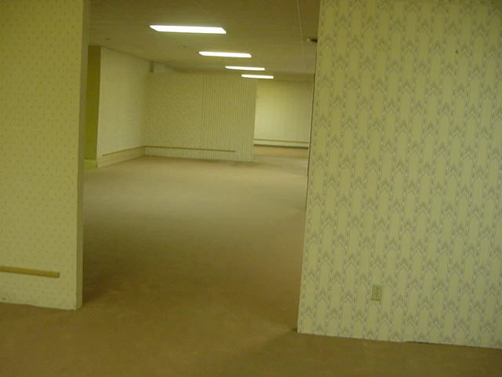
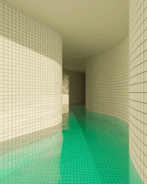
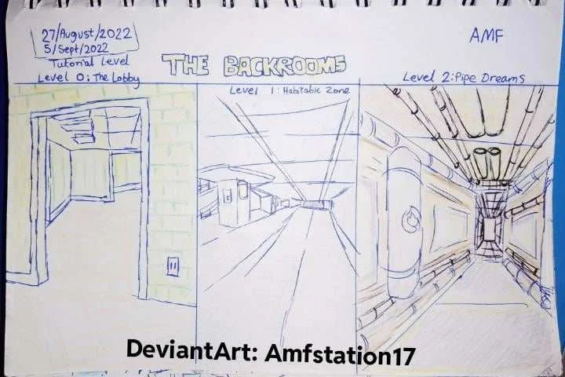
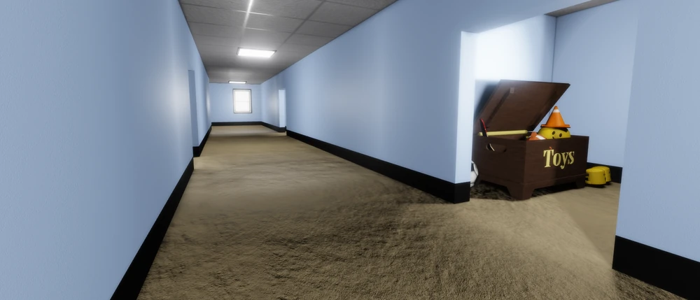

Origin: 4chan /x/, 2019 | Form: creepypasta → collaborative wiki → found-footage video → feature film
An internet horror phenomenon that grew from a single photograph and one paragraph into a years-long, community-built world. A tiny prompt became a setting, which grew into a multifaceted community worldbuilding project.
The Beginning
It started as one image — a yellow, empty, half-renovated commercial interior — posted to a 4chan thread asking for “disquieting images that just feel ‘off.‘” An anonymous reply named it and gave it a rule:

If you’re not careful and you Noclip out of reality in the wrong areas, you’ll end up in the Backrooms, where it’s nothing but the stink of old moist carpet, the madness of mono-yellow, the endless background noise of fluorescent lights at maximum hum-buzz, and the approximately six hundred million square miles of randomly segmented empty rooms to be trapped in. God save you if you hear something wandering around nearby, because it sure as hell has heard you.
They give an entry rule (noclip — a video-game term for falling through the map when collision fails), an aesthetic (carpet, mono-yellow, fluorescent hum), a scale (six hundred million square miles), and a threat.
The Unseen Thing
This initial image and text demonstrates the withholding that Wolf calls a catalyst of speculation — the gap the audience fills in. In this case, not just in their minds, but the community spent years filling in the world through games, films, and wiki content.
In Bounded Worlds terms the original is a Closed world: an outside (ordinary reality) is implied but withheld — you feel the edge of the maze without ever passing it.
Liminal Space
The Backrooms is the signature example of the liminal space aesthetic: transitional, semi-public built environments — hallways, offices, malls, empty pools, waiting rooms — treated as charged thresholds. Emptied of people and purpose but with their maintenance signs still humming, they produce disorientation and dread. Shira Chess calls this the “institutional gothic”: the haunted castle replaced by fluorescent lights, drop ceilings, and corporate bureaucracy.

The “Poolrooms” (the wiki’s Level 37) — the empty-pool variant of the aesthetic: white tile, warm light, still green water.A tighter, single-authored take on the same corridor-dread is The Exit 8 — one looping passage with a precise rule.
Creepypasta
The tradition the Backrooms belongs to: short, shareable internet horror stories that spread by copy-paste, reposting, and mutation. They’re folklore native to the web, authorless and endlessly remixed. (Perhaps Slender Man is the most famous earlier example.)
The Wiki Phenomenon
What the community did next demonstrates impressive worldbuilding. Within months the single paragraph became a participatory foundation. The recurring parts:
- Levels — the maze became one of many numbered spaces (offices, pools, parking garages).
- Entrances and exits — levels connect through “noclip” points and conditions.
- Entities — the unseen thing multiplied into a bestiary, each with documented behaviors.
- Rules — each level carries survival rules and a danger rating (the wiki’s “Survival Difficulty Class”): how to behave, what to avoid, when you’re safe.
- Almond water — a mundane found object (thermoses of liquid) that became the survival resource and informal currency.
- The M.E.G. (Major Explorer Group) — a faction of survivors that maps, rescues, and researches. Its real job is to give the wiki an in-world narrator.
- Canons — when contributors contradicted each other, the community created parallel canons. Contradiction became a feature, somehting like comic-book multiverses.

Fan-drawn level maps (DeviantArt: Amfstation17, 2022) — the numbered-level taxonomy sketched out by the community, from Level 0: The Lobby onward.Two wikis carried this — a Fandom wiki (2019, fast and maximalist) and a later Wikidot wiki (2020, more curated and literary).
Invention
All of it is Wolf’s invention at community scale — and all four of his types are present: Nominal (renaming reality the Frontrooms, people wanderers), Cultural (the M.E.G., the almond-water economy, the documentation itself), Natural (entities and level-biomes as invented fauna and landscape), and — the deepest — Ontological (reality has collision seams you can fall through; space is infinite and non-Euclidean).
From Creepypasta to Film
In January 2022, teenage creator Kane Parsons (“Kane Pixels”) released The Backrooms (Found Footage) on YouTube — analog-horror video that re-authored the crowd-sourced premise into a single, filmic continuity (VHS texture, a 1990s research-institute frame). It drew tens of millions of views and studio interest within weeks. That line led to A24’s feature film Backrooms (Parsons directing), released theatrically in 2026.
The Games
- Liminal ambience, no monster — POOLS turns the aesthetic into pure navigation dread: no enemies, no UI, no dialogue, just sound, water, and oppressive space.
- Atmospheric walking sim — The Complex: Found Footage is a VHS-camera walk through a Backrooms-like world.
- Co-op survival horror — Inside the Backrooms has up to four players escape levels by solving puzzles, managing supplies, and learning entity behavior.
- Polished multi-level escape — Escape the Backrooms turned the wiki’s level taxonomy into 30+ co-op levels with level-specific exits.

A Roblox rendition — the premise migrated to game platforms and mutated: blue walls instead of mono-yellow, a stray toy chest. A small instance of the parallel canons.Related
- World - The Exit 8 — a single-authored liminal looping world; close kin
- Wolf’s Taxonomy of Invention — the kit maps onto all four types of invention
- Catalysts of Speculation — the unseen thing; withholding as the engine
- Bounded Worlds — the original is a Closed world (an edge felt, never crossed)
- Completeness — how much of a world you actually build